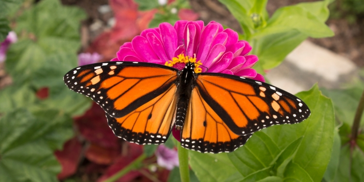

Butterflies, to many people, are the most beautiful insects one could come across. Which is a bit true, considering that their vibrant, colorful wings draw make them stand out in the sky. And while everyone knows about what a butterfly does in its life cycle, not a whole lot know what they respresent spiritually. At least, not below the surface of it. Why don't we look a little deeper into this?
Many don't know this, but butterflies have their own myths! These of course, vary from region to region. In China and Japan, for example, they represent the essence of joy and happiness. Back in Ancient Greece, the word for "butterfly" is "Psyche", which translates to "soul", and refers to the goddess Psyche, who represents human soul. In other myths, they say that if a white butterfly enters your home, or if it lands on you, it will bring good luck to you! They also say that seeing a white butterfly can mean that angels are watching over you. And, in some cultures, they believed a new human soul was born when a butterfly emerged from its cocoon, or that the butterfly was the soul of those who had died. As such, many viewed the butterfly with both respect and fear.
Sources
Mythology Meaning Luck© 2023 Caelan McCullen